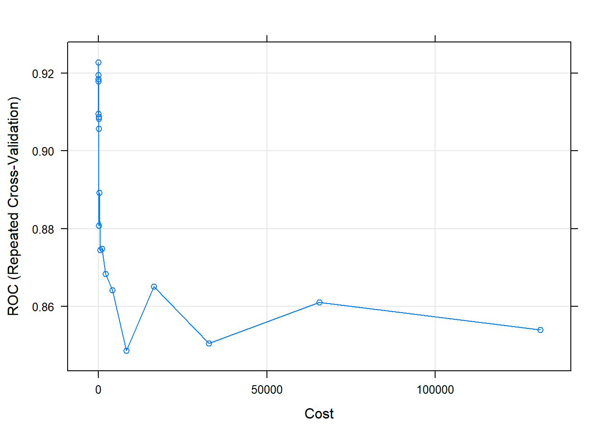

SVM
A continuación aplicaremos un modelo svm o support vector machine a nuestro grupo de datos. El algoritmo clasifica cada dato nuevo en el grupo que corresponda, según como consiga crear hiperplanos que separen de manera lineal los grupos de datos.
Cargamos las librerias y los datos que utilizaremos para el entrenamiento, con el conjunto de train, y la evaluación del modelo con el conjunto de test:
library(class)
library(dplyr)
library(caret)
library (ROCR)
library(e1071)
source("funcs.R")dataTrain <- readRDS("datasetTrain.rds")
dataTest <- readRDS("datasetTest.rds")Procedemos a despejar de los dataset (train y test) la variable objetivo original SalePrice. De la cual ya hemos creamos la variable GrupoPrecio, del tipo categorica. Separando asi por una parte un grupo de casas baratas y otro grupo de casas caras.
Nuestro modelo clasificará casas entre estos dos grupos.
dataTrain <- dataTrain %>% dplyr::select(-SalePrice)
dataTest <- dataTest %>% dplyr::select(-SalePrice)Para este modelo se han escogido dos grupos de caracteristicas, para poder comproba como mejora si añadimos o quitamos variables al modelo. Estos dos grupos de caracteristicas las divideramos en group1 y group2.
group1 <- c('TotalSF','LotArea','GrupoPrecio')
group2 <- c('TotalSF','LotArea','GrLivArea','GrupoPrecio')
dataTrain1 <- dataTrain %>% dplyr::select(group1)
dataTest1 <- dataTest %>% dplyr::select(group1)
dataTrain2 <- dataTrain %>% dplyr::select(group2)
dataTest2 <- dataTest %>% dplyr::select(group2)XTrain1 <- dataTrain1 %>% dplyr::select(-GrupoPrecio)
YTrain1 <- dataTrain1$GrupoPrecio
XTest1 <- dataTest1 %>% dplyr::select(-GrupoPrecio)
YTest1 <- dataTest1$GrupoPrecio
XTrain2 <- dataTrain2 %>% dplyr::select(-GrupoPrecio)
YTrain2 <- dataTrain2$GrupoPrecio
XTest2 <- dataTest2 %>% dplyr::select(-GrupoPrecio)
YTest2 <- dataTest2$GrupoPrecioA continuación, entrenamos el modelo con el conjunto de entrenamiento y evaluamos con el conjunto de test, el primer grupo de caracteristicas escogidas (group1).
#model <- svm(formula = GrupoPrecio ~ ., data = dataTrain, kernel = "linear", cost = 1, scale = TRUE)
model1 <- best.tune(method = svm, train.x = GrupoPrecio ~ ., data = dataTrain1, ranges = list(cost = c(0.001, 0.01, 0.1, 1, 5, 10, 100)), kernel = "radial", gamma = 1)
plot(model1, dataTrain1)
Debido a que este grupo solo contiene dos caracteristicas nos permite dibujar como el modelo svm divide el plano para clasificar los nuevos registros. Visualizamos también como se comporta el modelo con el conjunto de datos de test.
pred1 <- predict(model1, newdata = XTest1)
tab_test1 <- table(pred1, YTest1, dnn = c("Actual", "Predichos"))
(tab_test1)## Predichos
## Actual Barato Caro
## Barato 648 106
## Caro 16 19draw_confusion_matrix(tab_test1, "Actual", "Predichos")
accuracy(tab_test1)## [1] 84.53739svm_test_error1 <- calc_error_rate(predicted.value=pred1, true.value=YTest1)
(svm_test_error1)## [1] 0.1546261cm1 <- confusionMatrix(tab_test1)
(cm1)## Confusion Matrix and Statistics
##
## Predichos
## Actual Barato Caro
## Barato 648 106
## Caro 16 19
##
## Accuracy : 0.8454
## 95% CI : (0.8182, 0.8699)
## No Information Rate : 0.8416
## P-Value [Acc > NIR] : 0.4078
##
## Kappa : 0.1807
##
## Mcnemar's Test P-Value : 7.776e-16
##
## Sensitivity : 0.9759
## Specificity : 0.1520
## Pos Pred Value : 0.8594
## Neg Pred Value : 0.5429
## Prevalence : 0.8416
## Detection Rate : 0.8213
## Detection Prevalence : 0.9556
## Balanced Accuracy : 0.5640
##
## 'Positive' Class : Barato
## A continuación se realizara todos los pasos anteriores pero esta vez con otro conjunto de caracteristicas. Este conjunto dispone de más caracteristicas por lo que no podremos visualizar como separa el plano de caracteristicas. Podremos ver cuales de los dos modelos SVM funciona mejor.
model2 <- best.tune(method = svm, train.x = GrupoPrecio ~ ., data = dataTrain2, ranges = list(cost = c(0.001, 0.01, 0.1, 1, 5, 10, 100)), kernel = "radial", gamma = 1)pred2 <- predict(model2, newdata = XTest2)
tab_test2 <- table(pred2, YTest2, dnn = c("Actual", "Predichos"))
(tab_test2)## Predichos
## Actual Barato Caro
## Barato 649 102
## Caro 15 23draw_confusion_matrix(tab_test2, "Actual", "Predichos")
accuracy(tab_test2)## [1] 85.1711svm_test_error2 <- calc_error_rate(predicted.value=pred2, true.value=YTest2)
(svm_test_error2)## [1] 0.148289cm2 <- confusionMatrix(tab_test2)
(cm2)## Confusion Matrix and Statistics
##
## Predichos
## Actual Barato Caro
## Barato 649 102
## Caro 15 23
##
## Accuracy : 0.8517
## 95% CI : (0.825, 0.8758)
## No Information Rate : 0.8416
## P-Value [Acc > NIR] : 0.2339
##
## Kappa : 0.225
##
## Mcnemar's Test P-Value : 1.855e-15
##
## Sensitivity : 0.9774
## Specificity : 0.1840
## Pos Pred Value : 0.8642
## Neg Pred Value : 0.6053
## Prevalence : 0.8416
## Detection Rate : 0.8226
## Detection Prevalence : 0.9518
## Balanced Accuracy : 0.5807
##
## 'Positive' Class : Barato
##